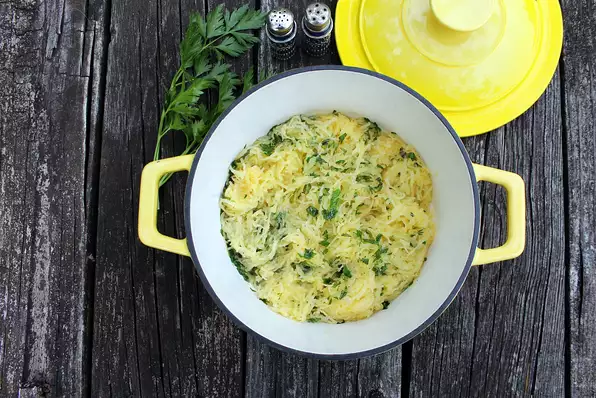

Main page
Herbed Spaghetti Squash
Easy recipe for a simple spaghetti squash that goes great with
anything!

Ingredients
- 1 small spaghetti squash, halved and seeded
- 2 ½ tablespoons butter
- ½ tablespoon chopped fresh chervil
- ½ tablespoon chopped fresh basil
- ½ tablespoon chopped fresh parsley
- ½ tablespoon chopped fresh sage
- ½ tablespoon chopped fresh chives
- ½ teaspoon salt
- ⅛ teaspoon freshly ground black pepper
Step 1
- Preheat the oven to 375 degrees F (190 degrees C).
Step 2
-
Place spaghetti squash halves cut-sides down in a baking dish and
add enough water to come 1/2-inch up the sides of the baking
dish.
Cover with aluminum foil.
Step 3
-
Bake in the preheated oven until the squash can easily be pierced
with a sharp knife, about 45 minutes. Turn squash over, cover
with
foil again, and continue to cook until the squash is very tender,
about 15 more minutes. Remove from the oven, uncover, and allow
to
cool slightly. Using a fork, gently pull the strands of squash
away
from the peel and place into a bowl.
Step 4
-
Melt butter in a skillet over medium heat. Add spaghetti squash
strands, chervil, basil, parsley, sage, chives, salt, and pepper
and
cook until flavors are combined and heated through, 2 to 3
minutes.